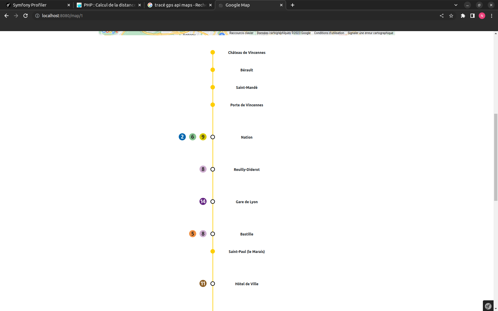
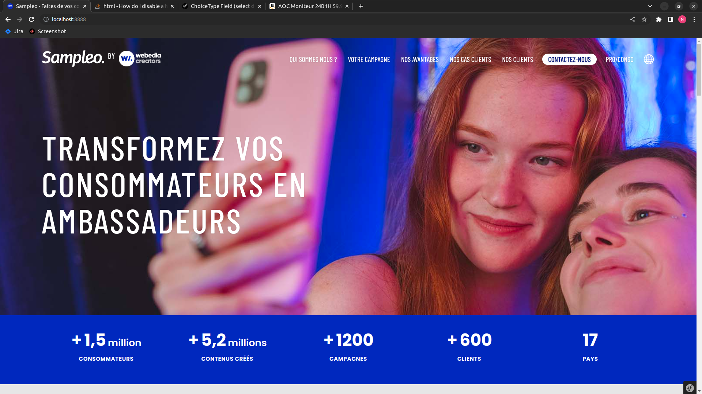

Description
Webedia est une entreprise française créée en 2007 par Cédric Siré,
suite aux lancements successifs des sites Purepeople (qui traite de l'actualité des célébrités),
Puretrend et Purefans, des sites internet créés dans des secteurs considérés comme « à fort potentiel d'intérêt et très peu traités en ligne ».
Avec environ 2400 employés et un capital social de 1 301 672,68 €,
Webedia est une entreprise très connue dans son domaine et particulièrement sur les réseaux sociaux,
grâce aux influenceurs les plus populaires d'internet.

Description
Dans un premier temps, mon maître de stage m'a demandé de réaliser un test technique.
Ce test technique avait pour but de me faire travailler sur la conception de données, basée sur les données d'un fichier CSV.
Le but du test était de pouvoir récupérer les stations de métro parisiennes et les lignes de métro, et de les afficher en fonction des lignes.
Dans un premier temps, il m'a fallu récupérer les données dans le fichier CSV, puis créer le modèle de données.
Ensuite, j'ai dû les afficher en fonction des lignes de métro. Une fois ces tâches terminées, le test était fini,
et comme il me restait du temps, de nouvelles tâches m'ont été assignées.
Il fallait donc que j'intègre, en plus de chaque arrêt, sa localisation grâce à des coordonnées géographiques et à l'API de Google Maps.

Description
Dans le cadre de ce projet, j'ai été responsable de la programmation de l'ensemble du site vitrine de l'entreprise.
En tant que chef de projet, j'ai également choisi les technologies à utiliser et supervisé le bon déroulement du projet en travaillant
en collaboration avec les autres équipes.
J'ai réussi à réaliser ce projet en seulement cinq semaines en combinant les compétences Front-End et Back-End.
Pour ce faire, j'ai décidé d'utiliser la dernière version de Symfony, un Framework PHP,
car c'était une technologie que je maîtrisais bien et qui me permettait de réaliser le projet dans les délais impartis.
Le projet s'est déroulé en trois étapes : premièrement, j'ai codé la partie Front-End sans la partie mobile.
Ensuite, j'ai corrigé les retours de la graphiste et réalisé la partie mobile et la partie d'administration.
Enfin, j'ai présenté le résultat final et effectué les dernières corrections lors d'une réunion finale.